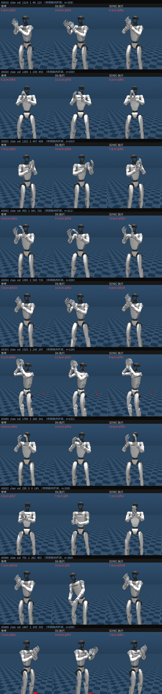

clap 执行闭合交叉验证：参考｜D6｜SONIC 同步三联（n=10）
只读展示。每条视频三格共用同一时间轴：同一条 V2 参考动作、
D6 GTrXL 执行、SONIC（全身策略控制，无手臂直通）执行。SONIC 的帧偏移由其包内参考与池参考
逐帧比对确定（对齐误差 ~1e-12）；全部最小腕距在三方共同覆盖的段内区间上取，
wrist_yaw_link、同一 MuJoCo 场景 FK。测量值如实陈列，不附判读。
汇总（n=10）
| 最小腕距中位 | gap 中位（相对参考） | 2cm 容差内跟合 | |
|---|---|---|---|
| 参考 | 7.2 cm | — | — |
| D6 GTrXL | 15.0 cm | +7.0 cm | 2/10 |
| SONIC（全身策略） | 7.3 cm | +0.0 cm | 10/10 |
逐条事实注记：00449 的参考自身最小腕距为 14.6 cm；00632 为
D6 gap +1.4 cm 的样本。样本为 crosstracker stress 实验（2026-07-29 Run Spec）选片集合中
全部可运行的 clap（10/13 条，3 条因中间参考文件缺失未跑）。
最紧一帧对比（全部段内取帧）

同步三联视频
00010_clap_val_1114_1_46_110
| 参考最小腕距 | 6.8 cm |
| D6 最小腕距 | 13.4 cm（gap +6.6） |
| SONIC 最小腕距 | 6.5 cm（gap -0.3） |
| 2cm 容差内跟合 | D6 否 ／ SONIC 是 |
| 共同段内帧数 | 158 |
00020_clap_val_1290_1_230_455
| 参考最小腕距 | 6.2 cm |
| D6 最小腕距 | 15.1 cm（gap +8.9） |
| SONIC 最小腕距 | 6.0 cm（gap -0.1） |
| 2cm 容差内跟合 | D6 否 ／ SONIC 是 |
| 共同段内帧数 | 200 |
00025_clap_val_1322_2_407_489
| 参考最小腕距 | 7.4 cm |
| D6 最小腕距 | 14.9 cm（gap +7.5） |
| SONIC 最小腕距 | 7.8 cm（gap +0.5） |
| 2cm 容差内跟合 | D6 否 ／ SONIC 是 |
| 共同段内帧数 | 203 |
00054_clap_val_1095_2_589_735
| 参考最小腕距 | 7.0 cm |
| D6 最小腕距 | 15.4 cm（gap +8.4） |
| SONIC 最小腕距 | 6.8 cm（gap -0.2） |
| 2cm 容差内跟合 | D6 否 ／ SONIC 是 |
| 共同段内帧数 | 200 |
00068_clap_val_1847_2_309_392
| 参考最小腕距 | 7.5 cm |
| D6 最小腕距 | 14.8 cm（gap +7.3） |
| SONIC 最小腕距 | 7.5 cm（gap +0.1） |
| 2cm 容差内跟合 | D6 否 ／ SONIC 是 |
| 共同段内帧数 | 200 |
00092_clap_val_403_1_641_726
| 参考最小腕距 | 14.0 cm |
| D6 最小腕距 | 17.3 cm（gap +3.2） |
| SONIC 最小腕距 | 13.8 cm（gap -0.3） |
| 2cm 容差内跟合 | D6 否 ／ SONIC 是 |
| 共同段内帧数 | 211 |
00303_clap_val_1525_2_245_297
| 参考最小腕距 | 9.1 cm |
| D6 最小腕距 | 12.8 cm（gap +3.7） |
| SONIC 最小腕距 | 9.6 cm（gap +0.5） |
| 2cm 容差内跟合 | D6 否 ／ SONIC 是 |
| 共同段内帧数 | 128 |
00449_clap_val_1789_2_280_341
| 参考最小腕距 | 14.6 cm |
| D6 最小腕距 | 15.2 cm（gap +0.6） |
| SONIC 最小腕距 | 15.8 cm（gap +1.2） |
| 2cm 容差内跟合 | D6 是 ／ SONIC 是 |
| 共同段内帧数 | 151 |
00632_clap_val_295_0_0_145
| 参考最小腕距 | 6.5 cm |
| D6 最小腕距 | 7.9 cm（gap +1.4） |
| SONIC 最小腕距 | 7.1 cm（gap +0.6） |
| 2cm 容差内跟合 | D6 是 ／ SONIC 是 |
| 共同段内帧数 | 200 |
00946_clap_val_701_2_262_403
| 参考最小腕距 | 7.1 cm |
| D6 最小腕距 | 15.6 cm（gap +8.5） |
| SONIC 最小腕距 | 7.0 cm（gap -0.0） |
| 2cm 容差内跟合 | D6 否 ／ SONIC 是 |
| 共同段内帧数 | 200 |
source: VAD_Alignment outputs/task067_prep/clap_d6_sonic_common_range.json · scripts/probe_task067_clap_d6_sonic_common_range.py · scripts/render_task067_clap_synced_triplet.py · 2026-08-08